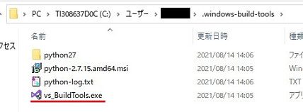
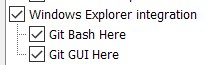

「opencv4nodejs」はNode.js上で画像処理ライブラリ「OpenCV」を利用するためのモジュールです。
Node-REDから「opencv4nodejs」を利用する手順を説明します。今回は「opencv4nodejs」のインストール手順について説明します。
以下は、Windows10 64bit + Node.jsバージョン14系での手順です。
インストール手順
「opencv4nodejs」はバイナリーでは提供されていません。自PCでビルドする必要があります。
ビルド自体は「npm install ～」で実行してくれるので難しくはないのですが、ビルド環境の準備をする必要があります。
まず、Node.jsのネイティブアドオンモジュール（C++で作成したモジュール）をコンパイルするためツール「node-gyp」をインストールします。
PowerShellを管理者権限で起動し以下を実行します。
> npm install -g node-gyp次に、「windows-build-tools」をインストールします。
> npm install -g --production windows-build-tools「windows-build-tools」のインストールは曲者です。私の環境では何時間も固まったようになり「Build Tools for Visual Studio」のインストールが失敗します。
何時間待っても終了しない時は、インストール中のPowerShellを閉じ、C:\Users\[YOUR ACCOUNT]\.windows-build-tools内のvs_BuildTools.exeを直接実行してみるのも手かもしれません。

以下のような画面が表示されます。
下の方は「セットアップが一時停止されました」と表示されていますが、これが何時間も固まった時の状態だと思われます。私は最新のものをインストールしました。（上の方）
「node-gyp」はPythonを利用します。2021/8において、推奨はPython v3.6、v3.7、v3.8、v3.9のようです。
今回は「windows-build-tools」に入っているPython v2.7は使わずに、Python v3.9をインストールして使います。(※1)
こちらからv3.9系をダウンロードししました。インストール時にPathの追加する設定を忘れないようにしてください。
インストール後に以下を実行してください。
> python --versionPythonのバージョンが適切なバージョンであることを確認してください。
次に、CMakeをインストールします。途中でPathを追加（add）するかを質問されるので、追加してください。デフォルトは追加しないになっていますので注意してください。
インストール後に以下を実行してください。
> cmake --versionCMakeのバージョンが表示されることを確認してください。
さらにに、Git for Windowsをインストールします。基本、デフォルト設定でインストールして問題ありませんが、エクスプローラの右クリックメニューにGitのコマンドを表示したくない場合は、コンポーネント選択画面で「Windows Explorer Integration」をOFFにしてください。

インストール後に以下を実行してください。
> git --versionGitのバージョンが表示されることを確認してください。
Python、Cmake、GitのPathが通っていな時は、こちらを参考にして追加してください。
そして、最後に以下を実行してください。
> npm install -g opencv4nodejs> opencv-build@0.1.9 install C:\Users\[YOUR ACCOUNT]\opencv4nodejs\node_modules\opencv-build
> node ./install.js
info install if you want to use an own OpenCV installation set OPENCV4NODEJS_DISABLE_AUTOBUILD
info readAutoBuildFile file does not exists: C:\Users\[YOUR ACCOUNT]\opencv4nodejs\node_modules\opencv-build\opencv\auto-build.json C:\Users\[YOUR ACCOUNT]\opencv4nodejs\node_modules\opencv-build\opencv\auto-build.json
info install failed to find auto-build.json: C:\Users\[YOUR ACCOUNT]\opencv4nodejs\node_modules\opencv-build\opencv\auto-build.json
info install
info install running install script...
info install
info install opencv version: 3.4.6
info install with opencv contrib: yes
info install custom build flags:
info install
info install executing: git --version
info install git --version: git version 2.32.0.windows.2
info install
info install executing: cmake --version
info install cmake --version: cmake version 3.21.1
info install
info install CMake suite maintained and supported by Kitware (kitware.com/cmake).
info install
info install using msbuild: {
info install path: 'C:\\Program Files (x86)\\Microsoft Visual Studio\\2017\\BuildTools\\MSBuild\\15.0\\Bin\\MSBuild.exe',
info install version: 15
info install }
info install installing opencv version 3.4.6 into directory: C:\Users\[YOUR ACCOUNT]\AppData\Roaming\npm\node_modules\opencv4nodejs\node_modules\opencv-build\opencv
・・・
info install spawning node gyp process: node-gyp rebuild --jobs max
・・・
途中で、git --versionとcmake --version、MSBuild.exeの有無のチェックをしているようです。また、PythonのPathが通っていないとnode-gyp rebuild --jobs maxの部分で失敗します。
うまくいけば、以下のような感じで終了します。私の環境ではずいぶん時間がかかりました。
・・・
+ opencv4nodejs@5.6.0
added 29 packages from 60 contributors and updated 1 package in 2382.262s2021/8 :「windows-build-tools」に入っているPython v2.7で成功しました。2021/10 :他のPCにインストールの際に「windows-build-tools」に入っているPython v2.7で失敗しました。Python v3.9をインストールし、C:\Users\[YOUR ACCOUNT]\.windows-build-tools\python27をPathから削除し、Python v3.9をPathに追加し成功しました。
正常にインストールされた場合
スタートメニュー -> Node.js -> Node.js を実行してください。
以下のように、const cv = require("opencv4nodejs")を実行した後、cvを実行してください。
> const cv = require("opencv4nodejs")
undefined
> cv
{
isCustomMatAllocatorEnabled: [Function: isCustomMatAllocatorEnabled],
dangerousEnableCustomMatAllocator: [Function: dangerousEnableCustomMatAllocator],
dangerousDisableCustomMatAllocator: [Function: dangerousDisableCustomMatAllocator],
getMemMetrics: [Function: getMemMetrics],
version: { major: 3, minor: 4, revision: 6 },
modules: {
core: true,
calib3d: true,
dnn: true,
face: true,
features2d: true,
imgproc: true,正常にインストールされなかった場合
その1
> const cv = require("opencv4nodejs")
Uncaught Error: The specified module could not be found.
\\?\C:\Users\[YOUR ACCOUNT]\AppData\Roaming\npm\node_modules\opencv4nodejs\build\Release\opencv4nodejs.node
at Object.Module._extensions..node (internal/modules/cjs/loader.js:1131:18)
at Module.load (internal/modules/cjs/loader.js:937:32)
at Function.Module._load (internal/modules/cjs/loader.js:778:12)
at Module.require (internal/modules/cjs/loader.js:961:19)
at require (internal/modules/cjs/helpers.js:92:18)上の場合、必要なdllが読み込めなかったようです。
C:\Users\[YOUR ACCOUNT]\AppData\Roaming\npm\node_modules\opencv4nodejs\node_modules\opencv-build\opencv\build\bin\ReleaseのPathを通すことで問題は解決されました。
その2
> const cv = require("opencv4nodejs")
Uncaught Error: Cannot find module 'opencv4nodejs'
Require stack:
- <repl>
at Function.Module._resolveFilename (internal/modules/cjs/loader.js:889:15)
at Function.Module._load (internal/modules/cjs/loader.js:745:27)
at Module.require (internal/modules/cjs/loader.js:961:19)
at require (internal/modules/cjs/helpers.js:92:18) {
code: 'MODULE_NOT_FOUND',
requireStack: [ '<repl>' ]
}この場合、環境変数NODE_PATHをC:\Users\[YOUR ACCOUNT]\AppData\Roaming\npm\node_modulesで作成し、環境変数Pathに%NODE_PATH%を追加してください。
これは、Node.jsのインストール時の忘れでした。
最後に
こちらの「How to install」も参考にしてください。
Node-REDで画像処理(opencv4nodejs) その2で、Node-REDからの利用手順を説明します。